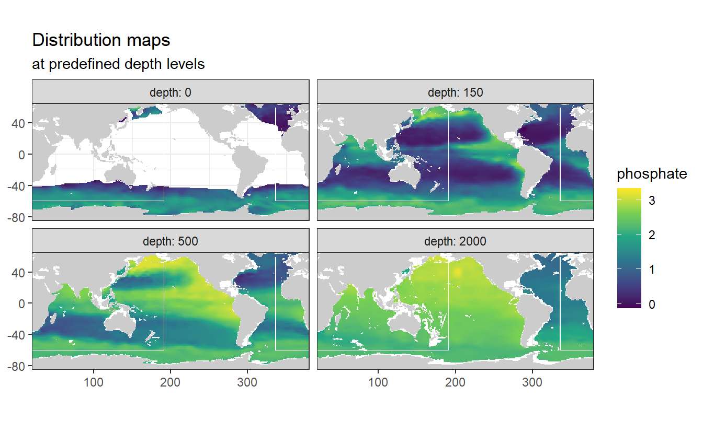
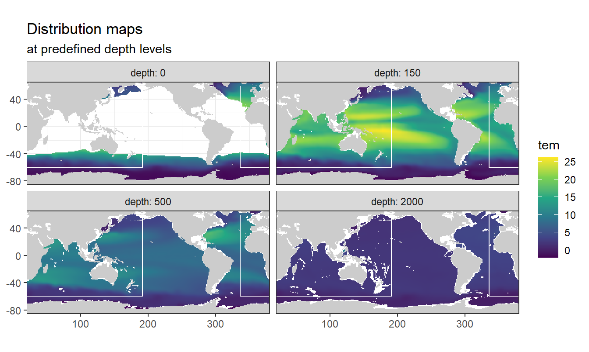
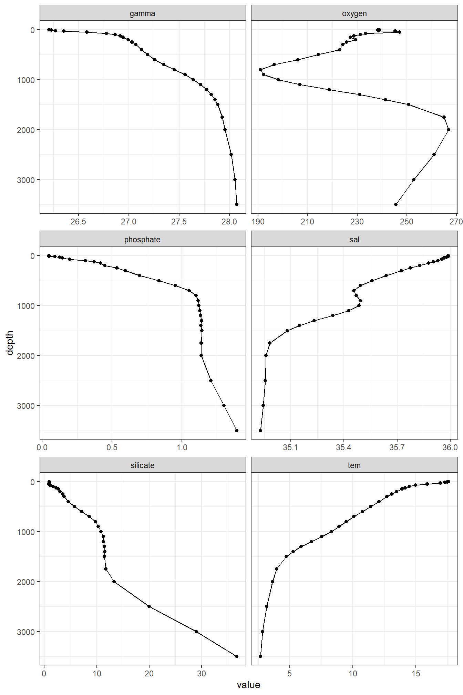
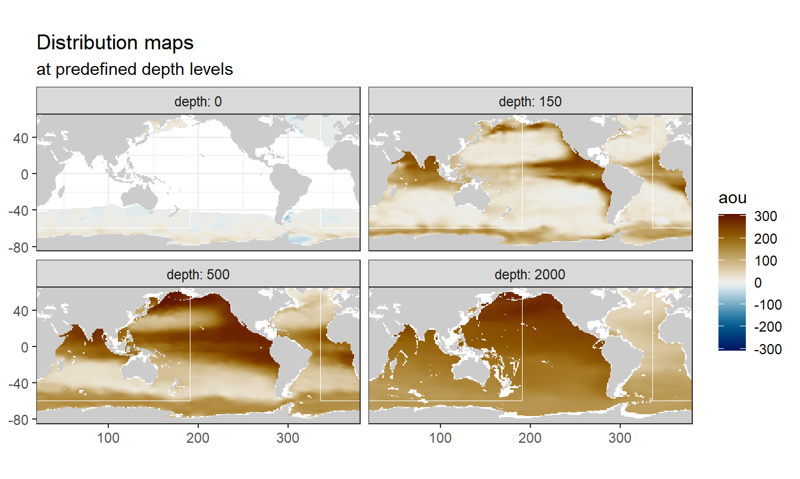
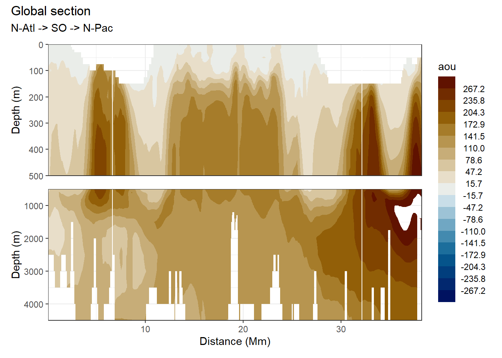

Mapping
Jens Daniel Müller
24 August, 2020
Last updated: 2020-08-24
Checks: 7 0
Knit directory: Cant_eMLR/
This reproducible R Markdown analysis was created with workflowr (version 1.6.2). The Checks tab describes the reproducibility checks that were applied when the results were created. The Past versions tab lists the development history.
Great! Since the R Markdown file has been committed to the Git repository, you know the exact version of the code that produced these results.
Great job! The global environment was empty. Objects defined in the global environment can affect the analysis in your R Markdown file in unknown ways. For reproduciblity it’s best to always run the code in an empty environment.
The command set.seed(20200707) was run prior to running the code in the R Markdown file. Setting a seed ensures that any results that rely on randomness, e.g. subsampling or permutations, are reproducible.
Great job! Recording the operating system, R version, and package versions is critical for reproducibility.
Nice! There were no cached chunks for this analysis, so you can be confident that you successfully produced the results during this run.
Great job! Using relative paths to the files within your workflowr project makes it easier to run your code on other machines.
Great! You are using Git for version control. Tracking code development and connecting the code version to the results is critical for reproducibility.
The results in this page were generated with repository version a804955. See the Past versions tab to see a history of the changes made to the R Markdown and HTML files.
Note that you need to be careful to ensure that all relevant files for the analysis have been committed to Git prior to generating the results (you can use wflow_publish or wflow_git_commit). workflowr only checks the R Markdown file, but you know if there are other scripts or data files that it depends on. Below is the status of the Git repository when the results were generated:
Ignored files:
Ignored: .Rproj.user/
Ignored: data/GLODAPv1_1/
Ignored: data/GLODAPv2_2016b_MappedClimatologies/
Ignored: data/GLODAPv2_2020/
Ignored: data/Gruber_2019/
Ignored: data/WOCE/
Ignored: data/World_Ocean_Atlas_2013_Clement/
Ignored: data/World_Ocean_Atlas_2018/
Ignored: data/eMLR/
Ignored: data/mapping/
Ignored: data/pCO2_atmosphere/
Ignored: dump/
Untracked files:
Untracked: output/figure/mapping/
Unstaged changes:
Modified: analysis/_site.yml
Deleted: analysis/mapping.Rmd
Modified: output/figure/eMLR/data_preparation/all_cruises_clean/GLODAP_cruise_date_1983-01-10_n_1235_cruise_238_.png
Modified: output/figure/eMLR/data_preparation/all_cruises_clean/GLODAP_cruise_date_1983-11-25_n_407_cruise_239_.png
Modified: output/figure/eMLR/data_preparation/all_cruises_clean/GLODAP_cruise_date_1986-03-12_n_1415_cruise_370_.png
Modified: output/figure/eMLR/data_preparation/all_cruises_clean/GLODAP_cruise_date_1988-09-10_n_3163_cruise_242_.png
Modified: output/figure/eMLR/data_preparation/all_cruises_clean/GLODAP_cruise_date_1989-02-16_n_58_cruise_621_.png
Modified: output/figure/eMLR/data_preparation/all_cruises_clean/GLODAP_cruise_date_1989-05-08_n_96_cruise_275_.png
Modified: output/figure/eMLR/data_preparation/all_cruises_clean/GLODAP_cruise_date_1989-08-18_n_475_cruise_371_.png
Modified: output/figure/eMLR/data_preparation/all_cruises_clean/GLODAP_cruise_date_1991-06-22_n_211_cruise_284_.png
Modified: output/figure/eMLR/data_preparation/all_cruises_clean/GLODAP_cruise_date_1991-09-15_n_398_cruise_286_.png
Modified: output/figure/eMLR/data_preparation/all_cruises_clean/GLODAP_cruise_date_1992-09-20_n_845_cruise_296_.png
Modified: output/figure/eMLR/data_preparation/all_cruises_clean/GLODAP_cruise_date_1993-05-31_n_516_cruise_300_.png
Modified: output/figure/eMLR/data_preparation/all_cruises_clean/GLODAP_cruise_date_1993-07-11_n_377_cruise_338_.png
Modified: output/figure/eMLR/data_preparation/all_cruises_clean/GLODAP_cruise_date_1993-08-02_n_1416_cruise_301_.png
Modified: output/figure/eMLR/data_preparation/all_cruises_clean/GLODAP_cruise_date_1993-09-06_n_187_cruise_712_.png
Modified: output/figure/eMLR/data_preparation/all_cruises_clean/GLODAP_cruise_date_1993-10-25_n_683_cruise_302_.png
Modified: output/figure/eMLR/data_preparation/all_cruises_clean/GLODAP_cruise_date_1994-01-27_n_743_cruise_459_.png
Modified: output/figure/eMLR/data_preparation/all_cruises_clean/GLODAP_cruise_date_1994-02-05_n_429_cruise_303_.png
Modified: output/figure/eMLR/data_preparation/all_cruises_clean/GLODAP_cruise_date_1994-02-14_n_1959_cruise_297_.png
Modified: output/figure/eMLR/data_preparation/all_cruises_clean/GLODAP_cruise_date_1994-04-27_n_1093_cruise_248_.png
Modified: output/figure/eMLR/data_preparation/all_cruises_clean/GLODAP_cruise_date_1994-05-05_n_2283_cruise_270_.png
Modified: output/figure/eMLR/data_preparation/all_cruises_clean/GLODAP_cruise_date_1994-05-07_n_231_cruise_428_.png
Modified: output/figure/eMLR/data_preparation/all_cruises_clean/GLODAP_cruise_date_1994-08-31_n_86_cruise_429_.png
Modified: output/figure/eMLR/data_preparation/all_cruises_clean/GLODAP_cruise_date_1994-10-11_n_765_cruise_102_.png
Modified: output/figure/eMLR/data_preparation/all_cruises_clean/GLODAP_cruise_date_1994-12-28_n_1422_cruise_249_.png
Modified: output/figure/eMLR/data_preparation/all_cruises_clean/GLODAP_cruise_date_1995-01-10_n_58_cruise_441_.png
Modified: output/figure/eMLR/data_preparation/all_cruises_clean/GLODAP_cruise_date_1995-01-18_n_709_cruise_67_.png
Modified: output/figure/eMLR/data_preparation/all_cruises_clean/GLODAP_cruise_date_1995-01-29_n_654_cruise_361_.png
Modified: output/figure/eMLR/data_preparation/all_cruises_clean/GLODAP_cruise_date_1995-02-13_n_1804_cruise_250_.png
Modified: output/figure/eMLR/data_preparation/all_cruises_clean/GLODAP_cruise_date_1995-03-12_n_211_cruise_362_.png
Modified: output/figure/eMLR/data_preparation/all_cruises_clean/GLODAP_cruise_date_1995-03-29_n_1450_cruise_251_.png
Modified: output/figure/eMLR/data_preparation/all_cruises_clean/GLODAP_cruise_date_1995-05-13_n_1431_cruise_252_.png
Modified: output/figure/eMLR/data_preparation/all_cruises_clean/GLODAP_cruise_date_1995-06-26_n_1064_cruise_253_.png
Modified: output/figure/eMLR/data_preparation/all_cruises_clean/GLODAP_cruise_date_1995-08-01_n_1569_cruise_254_.png
Modified: output/figure/eMLR/data_preparation/all_cruises_clean/GLODAP_cruise_date_1995-09-02_n_341_cruise_431_.png
Modified: output/figure/eMLR/data_preparation/all_cruises_clean/GLODAP_cruise_date_1995-09-21_n_1384_cruise_255_.png
Modified: output/figure/eMLR/data_preparation/all_cruises_clean/GLODAP_cruise_date_1995-10-10_n_1383_cruise_339_.png
Modified: output/figure/eMLR/data_preparation/all_cruises_clean/GLODAP_cruise_date_1995-11-18_n_684_cruise_256_.png
Modified: output/figure/eMLR/data_preparation/all_cruises_clean/GLODAP_cruise_date_1995-12-26_n_1338_cruise_257_.png
Modified: output/figure/eMLR/data_preparation/all_cruises_clean/GLODAP_cruise_date_1996-02-12_n_1867_cruise_280_.png
Modified: output/figure/eMLR/data_preparation/all_cruises_clean/GLODAP_cruise_date_1996-03-07_n_1097_cruise_374_.png
Modified: output/figure/eMLR/data_preparation/all_cruises_clean/GLODAP_cruise_date_1996-06-05_n_733_cruise_288_.png
Modified: output/figure/eMLR/data_preparation/all_cruises_clean/GLODAP_cruise_date_1996-09-09_n_549_cruise_68_.png
Modified: output/figure/eMLR/data_preparation/all_cruises_clean/GLODAP_cruise_date_1996-11-17_n_738_cruise_258_.png
Modified: output/figure/eMLR/data_preparation/all_cruises_clean/GLODAP_cruise_date_1997-04-26_n_20_cruise_648_.png
Modified: output/figure/eMLR/data_preparation/all_cruises_clean/GLODAP_cruise_date_1997-05-26_n_1028_cruise_160_.png
Modified: output/figure/eMLR/data_preparation/all_cruises_clean/GLODAP_cruise_date_1997-05-27_n_307_cruise_42_.png
Modified: output/figure/eMLR/data_preparation/all_cruises_clean/GLODAP_cruise_date_1997-06-14_n_1454_cruise_259_.png
Modified: output/figure/eMLR/data_preparation/all_cruises_clean/GLODAP_cruise_date_1997-07-30_n_1096_cruise_260_.png
Modified: output/figure/eMLR/data_preparation/all_cruises_clean/GLODAP_cruise_date_1997-08-25_n_770_cruise_261_.png
Modified: output/figure/eMLR/data_preparation/all_cruises_clean/GLODAP_cruise_date_1997-11-22_n_209_cruise_464_.png
Modified: output/figure/eMLR/data_preparation/all_cruises_clean/GLODAP_cruise_date_1998-02-11_n_635_cruise_341_.png
Modified: output/figure/eMLR/data_preparation/all_cruises_clean/GLODAP_cruise_date_1998-03-14_n_196_cruise_69_.png
Modified: output/figure/eMLR/data_preparation/all_cruises_clean/GLODAP_cruise_date_1998-06-07_n_44_cruise_448_.png
Modified: output/figure/eMLR/data_preparation/all_cruises_clean/GLODAP_cruise_date_1998-06-28_n_38_cruise_449_.png
Modified: output/figure/eMLR/data_preparation/all_cruises_clean/GLODAP_cruise_date_1998-10-09_n_33_cruise_409_.png
Modified: output/figure/eMLR/data_preparation/all_cruises_clean/GLODAP_cruise_date_1998-11-24_n_250_cruise_465_.png
Modified: output/figure/eMLR/data_preparation/all_cruises_clean/GLODAP_cruise_date_1999-05-17_n_90_cruise_467_.png
Modified: output/figure/eMLR/data_preparation/all_cruises_clean/GLODAP_cruise_date_1999-05-31_n_324_cruise_461_.png
Modified: output/figure/eMLR/data_preparation/all_cruises_clean/GLODAP_cruise_date_1999-09-05_n_87_cruise_468_.png
Modified: output/figure/eMLR/data_preparation/all_cruises_clean/GLODAP_cruise_date_1999-10-14_n_33_cruise_410_.png
Modified: output/figure/eMLR/data_preparation/all_cruises_clean/GLODAP_cruise_date_2000-01-20_n_179_cruise_472_.png
Modified: output/figure/eMLR/data_preparation/all_cruises_clean/GLODAP_cruise_date_2000-05-22_n_431_cruise_24_.png
Modified: output/figure/eMLR/data_preparation/all_cruises_clean/GLODAP_cruise_date_2000-10-14_n_26_cruise_411_.png
Modified: output/figure/eMLR/data_preparation/all_cruises_clean/GLODAP_cruise_date_2000-10-16_n_375_cruise_437_.png
Modified: output/figure/eMLR/data_preparation/all_cruises_clean/GLODAP_cruise_date_2000-10-26_n_603_cruise_82_.png
Modified: output/figure/eMLR/data_preparation/all_cruises_clean/GLODAP_cruise_date_2001-06-15_n_1120_cruise_83_.png
Modified: output/figure/eMLR/data_preparation/all_cruises_clean/GLODAP_cruise_date_2001-06-23_n_361_cruise_476_.png
Modified: output/figure/eMLR/data_preparation/all_cruises_clean/GLODAP_cruise_date_2001-08-14_n_814_cruise_477_.png
Modified: output/figure/eMLR/data_preparation/all_cruises_clean/GLODAP_cruise_date_2001-09-04_n_31_cruise_478_.png
Modified: output/figure/eMLR/data_preparation/all_cruises_clean/GLODAP_cruise_date_2001-09-12_n_390_cruise_438_.png
Modified: output/figure/eMLR/data_preparation/all_cruises_clean/GLODAP_cruise_date_2001-11-17_n_898_cruise_70_.png
Modified: output/figure/eMLR/data_preparation/all_cruises_clean/GLODAP_cruise_date_2002-04-01_n_46_cruise_682_.png
Modified: output/figure/eMLR/data_preparation/all_cruises_clean/GLODAP_cruise_date_2002-05-29_n_26_cruise_706_.png
Modified: output/figure/eMLR/data_preparation/all_cruises_clean/GLODAP_cruise_date_2002-06-27_n_146_cruise_263_.png
Modified: output/figure/eMLR/data_preparation/all_cruises_clean/GLODAP_cruise_date_2003-03-14_n_647_cruise_484_.png
Modified: output/figure/eMLR/data_preparation/all_cruises_clean/GLODAP_cruise_date_2003-08-10_n_1036_cruise_56_.png
Modified: output/figure/eMLR/data_preparation/all_cruises_clean/GLODAP_cruise_date_2003-09-07_n_2595_cruise_486_.png
Modified: output/figure/eMLR/data_preparation/all_cruises_clean/GLODAP_cruise_date_2003-10-06_n_1050_cruise_264_.png
Modified: output/figure/eMLR/data_preparation/all_cruises_clean/GLODAP_cruise_date_2003-10-10_n_102_cruise_633_.png
Modified: output/figure/eMLR/data_preparation/all_cruises_clean/GLODAP_cruise_date_2003-11-03_n_975_cruise_265_.png
Modified: output/figure/eMLR/data_preparation/all_cruises_clean/GLODAP_cruise_date_2003-11-19_n_1218_cruise_487_.png
Modified: output/figure/eMLR/data_preparation/all_cruises_clean/GLODAP_cruise_date_2004-01-02_n_1630_cruise_488_.png
Modified: output/figure/eMLR/data_preparation/all_cruises_clean/GLODAP_cruise_date_2004-04-06_n_61_cruise_489_.png
Modified: output/figure/eMLR/data_preparation/all_cruises_clean/GLODAP_cruise_date_2004-04-23_n_801_cruise_695_.png
Modified: output/figure/eMLR/data_preparation/all_cruises_clean/GLODAP_cruise_date_2004-05-22_n_200_cruise_167_.png
Modified: output/figure/eMLR/data_preparation/all_cruises_clean/GLODAP_cruise_date_2004-05-26_n_9_cruise_463_.png
Modified: output/figure/eMLR/data_preparation/all_cruises_clean/GLODAP_cruise_date_2004-07-20_n_3224_cruise_272_.png
Modified: output/figure/eMLR/data_preparation/all_cruises_clean/GLODAP_cruise_date_2004-08-18_n_876_cruise_490_.png
Modified: output/figure/eMLR/data_preparation/all_cruises_clean/GLODAP_cruise_date_2004-10-22_n_81_cruise_492_.png
Modified: output/figure/eMLR/data_preparation/all_cruises_clean/GLODAP_cruise_date_2004-11-27_n_926_cruise_493_.png
Modified: output/figure/eMLR/data_preparation/all_cruises_clean/GLODAP_cruise_date_2005-01-10_n_682_cruise_72_.png
Modified: output/figure/eMLR/data_preparation/all_cruises_clean/GLODAP_cruise_date_2005-01-25_n_2237_cruise_350_.png
Modified: output/figure/eMLR/data_preparation/all_cruises_clean/GLODAP_cruise_date_2005-03-08_n_66_cruise_494_.png
Modified: output/figure/eMLR/data_preparation/all_cruises_clean/GLODAP_cruise_date_2005-05-25_n_889_cruise_683_.png
Modified: output/figure/eMLR/data_preparation/all_cruises_clean/GLODAP_cruise_date_2005-05-30_n_240_cruise_168_.png
Modified: output/figure/eMLR/data_preparation/all_cruises_clean/GLODAP_cruise_date_2005-06-11_n_1490_cruise_495_.png
Modified: output/figure/eMLR/data_preparation/all_cruises_clean/GLODAP_cruise_date_2005-09-14_n_1833_cruise_266_.png
Modified: output/figure/eMLR/data_preparation/all_cruises_clean/GLODAP_cruise_date_2005-09-21_n_499_cruise_666_.png
Modified: output/figure/eMLR/data_preparation/all_cruises_clean/GLODAP_cruise_date_2005-09-30_n_175_cruise_496_.png
Modified: output/figure/eMLR/data_preparation/all_cruises_clean/GLODAP_cruise_date_2005-12-09_n_2541_cruise_497_.png
Modified: output/figure/eMLR/data_preparation/all_cruises_clean/GLODAP_cruise_date_2006-03-09_n_1553_cruise_306_.png
Modified: output/figure/eMLR/data_preparation/all_cruises_clean/GLODAP_cruise_date_2006-06-16_n_1_cruise_602_.png
Modified: output/figure/eMLR/data_preparation/all_cruises_clean/GLODAP_cruise_date_2006-06-22_n_844_cruise_498_.png
Modified: output/figure/eMLR/data_preparation/all_cruises_clean/GLODAP_cruise_date_2007-02-28_n_1668_cruise_352_.png
Modified: output/figure/eMLR/data_preparation/all_cruises_clean/GLODAP_cruise_date_2007-03-09_n_1006_cruise_501_.png
Modified: output/figure/eMLR/data_preparation/all_cruises_clean/GLODAP_cruise_date_2007-04-11_n_1914_cruise_353_.png
Modified: output/figure/eMLR/data_preparation/all_cruises_clean/GLODAP_cruise_date_2007-05-31_n_600_cruise_327_.png
Modified: output/figure/eMLR/data_preparation/all_cruises_clean/GLODAP_cruise_date_2007-08-14_n_1167_cruise_502_.png
Modified: output/figure/eMLR/data_preparation/all_cruises_clean/GLODAP_cruise_date_2007-09-16_n_477_cruise_667_.png
Modified: output/figure/eMLR/data_preparation/all_cruises_clean/GLODAP_cruise_date_2007-09-18_n_299_cruise_503_.png
Modified: output/figure/eMLR/data_preparation/all_cruises_clean/GLODAP_cruise_date_2007-10-30_n_1748_cruise_504_.png
Modified: output/figure/eMLR/data_preparation/all_cruises_clean/GLODAP_cruise_date_2007-12-07_n_1627_cruise_505_.png
Modified: output/figure/eMLR/data_preparation/all_cruises_clean/GLODAP_cruise_date_2008-01-09_n_543_cruise_74_.png
Modified: output/figure/eMLR/data_preparation/all_cruises_clean/GLODAP_cruise_date_2008-01-17_n_2443_cruise_345_.png
Modified: output/figure/eMLR/data_preparation/all_cruises_clean/GLODAP_cruise_date_2008-02-20_n_1284_cruise_354_.png
Modified: output/figure/eMLR/data_preparation/all_cruises_clean/GLODAP_cruise_date_2008-03-02_n_957_cruise_385_.png
Modified: output/figure/eMLR/data_preparation/all_cruises_clean/GLODAP_cruise_date_2008-03-14_n_846_cruise_19_.png
Modified: output/figure/eMLR/data_preparation/all_cruises_clean/GLODAP_cruise_date_2008-04-06_n_820_cruise_75_.png
Modified: output/figure/eMLR/data_preparation/all_cruises_clean/GLODAP_cruise_date_2008-05-28_n_411_cruise_171_.png
Modified: output/figure/eMLR/data_preparation/all_cruises_clean/GLODAP_cruise_date_2008-10-21_n_311_cruise_506_.png
Modified: output/figure/eMLR/data_preparation/all_cruises_clean/GLODAP_cruise_date_2009-01-07_n_343_cruise_674_.png
Modified: output/figure/eMLR/data_preparation/all_cruises_clean/GLODAP_cruise_date_2009-02-16_n_652_cruise_675_.png
Modified: output/figure/eMLR/data_preparation/all_cruises_clean/GLODAP_cruise_date_2009-02-27_n_1162_cruise_84_.png
Modified: output/figure/eMLR/data_preparation/all_cruises_clean/GLODAP_cruise_date_2009-03-29_n_1062_cruise_676_.png
Modified: output/figure/eMLR/data_preparation/all_cruises_clean/GLODAP_cruise_date_2009-04-17_n_3549_cruise_355_.png
Modified: output/figure/eMLR/data_preparation/all_cruises_clean/GLODAP_cruise_date_2009-05-18_n_2644_cruise_507_.png
Modified: output/figure/eMLR/data_preparation/all_cruises_clean/GLODAP_cruise_date_2009-05-23_n_312_cruise_172_.png
Modified: output/figure/eMLR/data_preparation/all_cruises_clean/GLODAP_cruise_date_2009-07-13_n_143_cruise_635_.png
Modified: output/figure/eMLR/data_preparation/all_cruises_clean/GLODAP_cruise_date_2009-08-02_n_120_cruise_26_.png
Modified: output/figure/eMLR/data_preparation/all_cruises_clean/GLODAP_cruise_date_2009-11-10_n_316_cruise_63_.png
Modified: output/figure/eMLR/data_preparation/all_cruises_clean/GLODAP_cruise_date_2009-12-27_n_2668_cruise_273_.png
Modified: output/figure/eMLR/data_preparation/all_cruises_clean/GLODAP_cruise_date_2010-01-25_n_928_cruise_699_.png
Modified: output/figure/eMLR/data_preparation/all_cruises_clean/GLODAP_cruise_date_2010-03-30_n_2265_cruise_346_.png
Modified: output/figure/eMLR/data_preparation/all_cruises_clean/GLODAP_cruise_date_2010-04-03_n_367_cruise_703_.png
Modified: output/figure/eMLR/data_preparation/all_cruises_clean/GLODAP_cruise_date_2010-05-26_n_161_cruise_1085_.png
Modified: output/figure/eMLR/data_preparation/all_cruises_clean/GLODAP_cruise_date_2010-06-26_n_157_cruise_1063_.png
Modified: output/figure/eMLR/data_preparation/all_cruises_clean/GLODAP_cruise_date_2010-07-26_n_1203_cruise_609_.png
Modified: output/figure/eMLR/data_preparation/all_cruises_clean/GLODAP_cruise_date_2010-08-19_n_80_cruise_1064_.png
Modified: output/figure/eMLR/data_preparation/all_cruises_clean/GLODAP_cruise_date_2010-10-17_n_136_cruise_2028_.png
Modified: output/figure/eMLR/data_preparation/all_cruises_clean/GLODAP_cruise_date_2010-11-15_n_83_cruise_2029_.png
Modified: output/figure/eMLR/data_preparation/all_cruises_clean/GLODAP_cruise_date_2010-12-22_n_1296_cruise_20_.png
Modified: output/figure/eMLR/data_preparation/all_cruises_clean/GLODAP_cruise_date_2011-01-17_n_107_cruise_1065_.png
Modified: output/figure/eMLR/data_preparation/all_cruises_clean/GLODAP_cruise_date_2011-01-30_n_269_cruise_1087_.png
Modified: output/figure/eMLR/data_preparation/all_cruises_clean/GLODAP_cruise_date_2011-02-18_n_116_cruise_1066_.png
Modified: output/figure/eMLR/data_preparation/all_cruises_clean/GLODAP_cruise_date_2011-03-21_n_1930_cruise_295_.png
Modified: output/figure/eMLR/data_preparation/all_cruises_clean/GLODAP_cruise_date_2011-05-18_n_510_cruise_174_.png
Modified: output/figure/eMLR/data_preparation/all_cruises_clean/GLODAP_cruise_date_2011-06-25_n_249_cruise_1067_.png
Modified: output/figure/eMLR/data_preparation/all_cruises_clean/GLODAP_cruise_date_2011-07-07_n_2107_cruise_517_.png
Modified: output/figure/eMLR/data_preparation/all_cruises_clean/GLODAP_cruise_date_2011-10-09_n_617_cruise_347_.png
Modified: output/figure/eMLR/data_preparation/all_cruises_clean/GLODAP_cruise_date_2011-10-26_n_204_cruise_2031_.png
Modified: output/figure/eMLR/data_preparation/all_cruises_clean/GLODAP_cruise_date_2012-02-06_n_144_cruise_1090_.png
Modified: output/figure/eMLR/data_preparation/all_cruises_clean/GLODAP_cruise_date_2012-02-06_n_586_cruise_1002_.png
Modified: output/figure/eMLR/data_preparation/all_cruises_clean/GLODAP_cruise_date_2012-02-19_n_235_cruise_1069_.png
Modified: output/figure/eMLR/data_preparation/all_cruises_clean/GLODAP_cruise_date_2012-04-04_n_1059_cruise_329_.png
Modified: output/figure/eMLR/data_preparation/all_cruises_clean/GLODAP_cruise_date_2012-04-15_n_99_cruise_2033_.png
Modified: output/figure/eMLR/data_preparation/all_cruises_clean/GLODAP_cruise_date_2012-05-01_n_1379_cruise_330_.png
Modified: output/figure/eMLR/data_preparation/all_cruises_clean/GLODAP_cruise_date_2012-06-07_n_141_cruise_1029_.png
Modified: output/figure/eMLR/data_preparation/all_cruises_clean/GLODAP_cruise_date_2012-06-26_n_386_cruise_1092_.png
Modified: output/figure/eMLR/data_preparation/all_cruises_clean/GLODAP_cruise_date_2012-07-20_n_784_cruise_1071_.png
Modified: output/figure/eMLR/data_preparation/all_cruises_clean/GLODAP_cruise_date_2012-08-15_n_1114_cruise_518_.png
Modified: output/figure/eMLR/data_preparation/all_cruises_clean/GLODAP_cruise_date_2012-11-12_n_161_cruise_1073_.png
Modified: output/figure/eMLR/data_preparation/all_cruises_clean/GLODAP_cruise_date_2012-12-05_n_200_cruise_2071_.png
Modified: output/figure/eMLR/data_preparation/all_cruises_clean/GLODAP_cruise_date_2012-12-12_n_113_cruise_1074_.png
Modified: output/figure/eMLR/data_preparation/all_cruises_clean/GLODAP_cruise_date_2012-12-15_n_775_cruise_1050_.png
Modified: output/figure/eMLR/data_preparation/all_cruises_clean/GLODAP_cruise_date_2013-01-23_n_823_cruise_1051_.png
Modified: output/figure/eMLR/data_preparation/all_cruises_clean/GLODAP_cruise_date_2013-01-29_n_350_cruise_1093_.png
Modified: output/figure/eMLR/data_preparation/all_cruises_clean/GLODAP_cruise_date_2013-02-19_n_217_cruise_1076_.png
Modified: output/figure/eMLR/data_preparation/all_cruises_clean/GLODAP_cruise_date_2013-03-14_n_208_cruise_2072_.png
Modified: output/figure/eMLR/data_preparation/all_cruises_clean/GLODAP_cruise_date_2013-05-03_n_2792_cruise_1035_.png
Modified: output/figure/eMLR/data_preparation/all_cruises_clean/GLODAP_cruise_date_2013-05-06_n_288_cruise_2073_.png
Modified: output/figure/eMLR/data_preparation/all_cruises_clean/GLODAP_cruise_date_2013-06-09_n_213_cruise_1078_.png
Modified: output/figure/eMLR/data_preparation/all_cruises_clean/GLODAP_cruise_date_2013-07-23_n_668_cruise_1079_.png
Modified: output/figure/eMLR/data_preparation/all_cruises_clean/GLODAP_cruise_date_2013-08-21_n_830_cruise_1096_.png
Modified: output/figure/eMLR/data_preparation/all_cruises_clean/GLODAP_cruise_date_2013-09-03_n_1824_cruise_1041_.png
Modified: output/figure/eMLR/data_preparation/all_cruises_clean/GLODAP_cruise_date_2013-10-11_n_140_cruise_2035_.png
Modified: output/figure/eMLR/data_preparation/all_cruises_clean/GLODAP_cruise_date_2013-11-09_n_121_cruise_2036_.png
Modified: output/figure/eMLR/data_preparation/all_cruises_clean/GLODAP_cruise_date_2013-12-06_n_135_cruise_2074_.png
Modified: output/figure/eMLR/data_preparation/all_cruises_clean/GLODAP_cruise_date_2014-01-12_n_1650_cruise_1042_.png
Modified: output/figure/eMLR/data_preparation/all_cruises_clean/GLODAP_cruise_date_2014-01-24_n_281_cruise_2075_.png
Modified: output/figure/eMLR/data_preparation/all_cruises_clean/GLODAP_cruise_date_2014-02-22_n_251_cruise_2038_.png
Modified: output/figure/eMLR/data_preparation/all_cruises_clean/GLODAP_cruise_date_2014-03-13_n_183_cruise_2076_.png
Modified: output/figure/eMLR/data_preparation/all_cruises_clean/GLODAP_cruise_date_2014-04-18_n_2200_cruise_1036_.png
Modified: output/figure/eMLR/data_preparation/all_cruises_clean/GLODAP_cruise_date_2014-04-29_n_75_cruise_2039_.png
Modified: output/figure/eMLR/data_preparation/all_cruises_clean/GLODAP_cruise_date_2014-05-04_n_265_cruise_2077_.png
Modified: output/figure/eMLR/data_preparation/all_cruises_clean/GLODAP_cruise_date_2014-05-18_n_257_cruise_2040_.png
Modified: output/figure/eMLR/data_preparation/all_cruises_clean/GLODAP_cruise_date_2014-06-16_n_181_cruise_2078_.png
Modified: output/figure/eMLR/data_preparation/all_cruises_clean/GLODAP_cruise_date_2014-07-08_n_358_cruise_1098_.png
Modified: output/figure/eMLR/data_preparation/all_cruises_clean/GLODAP_cruise_date_2014-07-24_n_392_cruise_2041_.png
Modified: output/figure/eMLR/data_preparation/all_cruises_clean/GLODAP_cruise_date_2014-08-03_n_1668_cruise_1053_.png
Modified: output/figure/eMLR/data_preparation/all_cruises_clean/GLODAP_cruise_date_2014-08-10_n_697_cruise_1099_.png
Modified: output/figure/eMLR/data_preparation/all_cruises_clean/GLODAP_cruise_date_2014-09-30_n_130_cruise_2042_.png
Modified: output/figure/eMLR/data_preparation/all_cruises_clean/GLODAP_cruise_date_2014-11-24_n_82_cruise_2079_.png
Modified: output/figure/eMLR/data_preparation/all_cruises_clean/GLODAP_cruise_date_2014-12-11_n_533_cruise_1004_.png
Modified: output/figure/eMLR/data_preparation/all_cruises_clean/GLODAP_cruise_date_2015-01-19_n_65_cruise_2043_.png
Modified: output/figure/eMLR/data_preparation/all_cruises_clean/GLODAP_cruise_date_2015-01-29_n_311_cruise_2080_.png
Modified: output/figure/eMLR/data_preparation/all_cruises_clean/GLODAP_cruise_date_2015-02-14_n_227_cruise_2044_.png
Modified: output/figure/eMLR/data_preparation/all_cruises_clean/GLODAP_cruise_date_2015-03-04_n_207_cruise_2081_.png
Modified: output/figure/eMLR/data_preparation/all_cruises_clean/GLODAP_cruise_date_2015-03-25_n_17_cruise_1017_.png
Modified: output/figure/eMLR/data_preparation/all_cruises_clean/GLODAP_cruise_date_2015-04-20_n_258_cruise_1103_.png
Modified: output/figure/eMLR/data_preparation/all_cruises_clean/GLODAP_cruise_date_2015-04-20_n_96_cruise_2045_.png
Modified: output/figure/eMLR/data_preparation/all_cruises_clean/GLODAP_cruise_date_2015-05-02_n_229_cruise_2083_.png
Modified: output/figure/eMLR/data_preparation/all_cruises_clean/GLODAP_cruise_date_2015-05-04_n_852_cruise_1043_.png
Modified: output/figure/eMLR/data_preparation/all_cruises_clean/GLODAP_cruise_date_2015-05-12_n_358_cruise_1027_.png
Modified: output/figure/eMLR/data_preparation/all_cruises_clean/GLODAP_cruise_date_2015-05-17_n_136_cruise_2046_.png
Modified: output/figure/eMLR/data_preparation/all_cruises_clean/GLODAP_cruise_date_2015-05-17_n_685_cruise_1011_.png
Modified: output/figure/eMLR/data_preparation/all_cruises_clean/GLODAP_cruise_date_2015-06-09_n_1565_cruise_1044_.png
Modified: output/figure/eMLR/data_preparation/all_cruises_clean/GLODAP_cruise_date_2015-06-13_n_281_cruise_2084_.png
Modified: output/figure/eMLR/data_preparation/all_cruises_clean/GLODAP_cruise_date_2015-07-20_n_442_cruise_2047_.png
Modified: output/figure/eMLR/data_preparation/all_cruises_clean/GLODAP_cruise_date_2015-08-12_n_2_cruise_1040_.png
Modified: output/figure/eMLR/data_preparation/all_cruises_clean/GLODAP_cruise_date_2015-08-17_n_758_cruise_1100_.png
Modified: output/figure/eMLR/data_preparation/all_cruises_clean/GLODAP_cruise_date_2015-11-05_n_130_cruise_2048_.png
Modified: output/figure/eMLR/data_preparation/all_cruises_clean/GLODAP_cruise_date_2015-11-20_n_102_cruise_2086_.png
Modified: output/figure/eMLR/data_preparation/all_cruises_clean/GLODAP_cruise_date_2016-01-03_n_644_cruise_1054_.png
Modified: output/figure/eMLR/data_preparation/all_cruises_clean/GLODAP_cruise_date_2016-01-16_n_77_cruise_2049_.png
Modified: output/figure/eMLR/data_preparation/all_cruises_clean/GLODAP_cruise_date_2016-01-25_n_279_cruise_2087_.png
Modified: output/figure/eMLR/data_preparation/all_cruises_clean/GLODAP_cruise_date_2016-02-15_n_378_cruise_2050_.png
Modified: output/figure/eMLR/data_preparation/all_cruises_clean/GLODAP_cruise_date_2016-03-01_n_1326_cruise_1046_.png
Modified: output/figure/eMLR/data_preparation/all_cruises_clean/GLODAP_cruise_date_2016-03-04_n_222_cruise_2088_.png
Modified: output/figure/eMLR/data_preparation/all_cruises_clean/GLODAP_cruise_date_2016-04-13_n_106_cruise_2051_.png
Modified: output/figure/eMLR/data_preparation/all_cruises_clean/GLODAP_cruise_date_2016-05-04_n_304_cruise_2090_.png
Modified: output/figure/eMLR/data_preparation/all_cruises_clean/GLODAP_cruise_date_2016-05-16_n_140_cruise_2052_.png
Modified: output/figure/eMLR/data_preparation/all_cruises_clean/GLODAP_cruise_date_2016-05-31_n_2076_cruise_1020_.png
Modified: output/figure/eMLR/data_preparation/all_cruises_clean/GLODAP_cruise_date_2016-06-16_n_251_cruise_2091_.png
Modified: output/figure/eMLR/data_preparation/all_cruises_clean/GLODAP_cruise_date_2016-06-24_n_101_cruise_2053_.png
Modified: output/figure/eMLR/data_preparation/all_cruises_clean/GLODAP_cruise_date_2016-07-21_n_1095_cruise_1101_.png
Modified: output/figure/eMLR/data_preparation/all_cruises_clean/GLODAP_cruise_date_2016-08-12_n_280_cruise_2054_.png
Modified: output/figure/eMLR/data_preparation/all_cruises_clean/GLODAP_cruise_date_2016-09-25_n_156_cruise_2055_.png
Modified: output/figure/eMLR/data_preparation/all_cruises_clean/GLODAP_cruise_date_2016-11-01_n_129_cruise_2092_.png
Modified: output/figure/eMLR/data_preparation/all_cruises_clean/GLODAP_cruise_date_2016-11-20_n_100_cruise_2056_.png
Modified: output/figure/eMLR/data_preparation/all_cruises_clean/GLODAP_cruise_date_2016-12-25_n_3824_cruise_1045_.png
Modified: output/figure/eMLR/data_preparation/all_cruises_clean/GLODAP_cruise_date_2017-01-12_n_102_cruise_2093_.png
Modified: output/figure/eMLR/data_preparation/all_cruises_clean/GLODAP_cruise_date_2017-01-30_n_363_cruise_2057_.png
Modified: output/figure/eMLR/data_preparation/all_cruises_clean/GLODAP_cruise_date_2017-02-16_n_262_cruise_2094_.png
Modified: output/figure/eMLR/data_preparation/all_cruises_clean/GLODAP_cruise_date_2017-02-19_n_427_cruise_1055_.png
Modified: output/figure/eMLR/data_preparation/all_cruises_clean/GLODAP_cruise_date_2017-03-06_n_272_cruise_2058_.png
Modified: output/figure/eMLR/data_preparation/all_cruises_clean/GLODAP_cruise_date_2017-04-16_n_252_cruise_2059_.png
Modified: output/figure/eMLR/data_preparation/all_cruises_clean/GLODAP_cruise_date_2017-05-07_n_146_cruise_2060_.png
Modified: output/figure/eMLR/data_preparation/all_cruises_clean/GLODAP_cruise_date_2017-05-11_n_673_cruise_2027_.png
Modified: output/figure/eMLR/data_preparation/all_cruises_clean/GLODAP_cruise_date_2017-06-20_n_133_cruise_2061_.png
Modified: output/figure/eMLR/data_preparation/all_cruises_clean/GLODAP_cruise_date_2017-07-10_n_1051_cruise_2096_.png
Modified: output/figure/eMLR/data_preparation/all_cruises_clean/GLODAP_cruise_date_2017-08-13_n_216_cruise_2062_.png
Modified: output/figure/eMLR/data_preparation/all_cruises_clean/GLODAP_cruise_date_2017-09-12_n_155_cruise_2097_.png
Modified: output/figure/eMLR/data_preparation/all_cruises_clean/GLODAP_cruise_date_2017-11-16_n_134_cruise_2063_.png
Modified: output/figure/eMLR/data_preparation/all_cruises_clean/GLODAP_cruise_date_2017-12-04_n_242_cruise_2098_.png
Modified: output/figure/eMLR/data_preparation/all_cruises_clean/GLODAP_cruise_date_2018-01-24_n_305_cruise_2099_.png
Modified: output/figure/eMLR/data_preparation/all_cruises_clean/GLODAP_cruise_date_2018-01-29_n_1266_cruise_2008_.png
Modified: output/figure/eMLR/data_preparation/all_cruises_clean/GLODAP_cruise_date_2018-02-12_n_274_cruise_2064_.png
Modified: output/figure/eMLR/data_preparation/all_cruises_clean/GLODAP_cruise_date_2018-03-07_n_248_cruise_2100_.png
Modified: output/figure/eMLR/data_preparation/all_cruises_clean/GLODAP_cruise_date_2018-03-18_n_1811_cruise_2105_.png
Modified: output/figure/eMLR/data_preparation/all_cruises_clean/GLODAP_cruise_date_2018-04-16_n_327_cruise_2065_.png
Modified: output/figure/eMLR/data_preparation/all_cruises_clean/GLODAP_cruise_date_2018-05-07_n_148_cruise_2101_.png
Modified: output/figure/eMLR/data_preparation/all_cruises_clean/GLODAP_cruise_date_2018-05-28_n_243_cruise_2066_.png
Modified: output/figure/eMLR/data_preparation/all_cruises_clean/GLODAP_cruise_date_2018-06-22_n_501_cruise_2102_.png
Modified: output/figure/eMLR/data_preparation/all_cruises_clean/GLODAP_cruise_date_2018-08-01_n_185_cruise_2067_.png
Modified: output/figure/eMLR/data_preparation/all_cruises_clean/GLODAP_cruise_date_2018-10-09_n_153_cruise_2068_.png
Note that any generated files, e.g. HTML, png, CSS, etc., are not included in this status report because it is ok for generated content to have uncommitted changes.
These are the previous versions of the repository in which changes were made to the R Markdown (analysis/mapping_predictor_preparation.Rmd) and HTML (docs/mapping_predictor_preparation.html) files. If you’ve configured a remote Git repository (see ?wflow_git_remote), click on the hyperlinks in the table below to view the files as they were in that past version.
| File | Version | Author | Date | Message |
|---|---|---|---|---|
| Rmd | a804955 | jens-daniel-mueller | 2020-08-24 | split mapping into 2 rmds, po4star selection in parameters, use po4star nitrate |
library(tidyverse)
library(metR)
library(marelac)
# library(lubridate)
# library(oce)
# library(reticulate)basinmask <- read_csv(here::here("data/World_Ocean_Atlas_2018/_summarized_files",
"basin_mask_WOA18.csv"))
landmask <- read_csv(here::here("data/World_Ocean_Atlas_2018/_summarized_files",
"land_mask_WOA18.csv"))1 Required data
All required data sets were subsetted spatially in the read-in section Data base. Currently, following data sets are used for mapping:
1.1 GLODAPv2_2016b_MappedClimatologies
Following variables are currently used:
- Salinity
- Temperature
- Phosphate (+Phosphate*)
- Silicate
- Oxygen (+AOU)
variables <-
c("salinity", "temperature", "oxygen", "PO4", "silicate", "NO3")
for (i_variable in variables) {
temp <- read_csv(
here::here(
"data/GLODAPv2_2016b_MappedClimatologies/_summarized_files",
paste(i_variable, ".csv", sep = "")
)
)
if (exists("GLODAP_predictors")) {
GLODAP_predictors <- full_join(GLODAP_predictors, temp)
}
if (!exists("GLODAP_predictors")) {
GLODAP_predictors <- temp
}
}
rm(temp, i_variable, variables)
# removed na's attributable to slightly different coverage of predictor fields
GLODAP_predictors <- GLODAP_predictors %>%
drop_na()
GLODAP_predictors <- GLODAP_predictors %>%
rename(sal = salinity,
tem = temperature)1.2 World Ocean Atlas 2018
- Neutral density
- Basin mask
WOA18_predictors <-
read_csv(
here::here(
"data/World_Ocean_Atlas_2018/_summarized_files",
"WOA18_predictors.csv"
)
)1.3 WOA13
Neutral densities and the basin mask based on WOA13 and provided by Dominic Clement are currently not used.
WOA13 <-
read_csv(
here::here(
"data/World_Ocean_Atlas_2013_Clement/_summarized_files",
"WOA13_mask_gamma.csv"
)
)
WOA13_gamma <- WOA13 %>%
select(-mask)
rm(WOA13)2 Join predictor climatologies
CAVEAT: Coverage of GLODAP climatologies differs slightly for parameters (some are NA in some regions)
2.1 Control plots
Maps of number of observations per horizontal grid cell, which reflects the number of depth levels.
2.1.1 GLODAP climatology
GLODAP_predictors %>%
ggplot(aes(lon, lat)) +
geom_bin2d(binwidth = 1) +
scale_fill_viridis_c(direction = -1) +
coord_quickmap(expand = 0) +
theme(legend.position = "bottom")
2.1.2 WOA18 climatology
WOA18_predictors <- WOA18_predictors %>%
filter(depth %in% parameters$depth_levels_33)
WOA18_predictors %>%
ggplot(aes(lon, lat)) +
geom_bin2d(binwidth = 1) +
scale_fill_viridis_c(direction = -1) +
coord_quickmap(expand = 0) +
theme(legend.position = "bottom")
2.1.3 Neutral density zonal mean section
WOA18_predictors_zonal <- WOA18_predictors %>%
group_by(lat, depth, basin) %>%
summarise(gamma_mean = mean(gamma)) %>%
ungroup()
WOA18_predictors_zonal_Atl <- WOA18_predictors_zonal %>%
filter(basin == "Atlantic") %>%
mutate(gamma_slab = cut(gamma_mean, parameters$slabs_Atl))
WOA18_predictors_zonal_Ind_Pac <- WOA18_predictors_zonal %>%
filter(basin == "Indo-Pacific") %>%
mutate(gamma_slab = cut(gamma_mean, parameters$slabs_Ind_Pac))
WOA18_predictors_zonal <- bind_rows(WOA18_predictors_zonal_Atl, WOA18_predictors_zonal_Ind_Pac)
rm(WOA18_predictors_zonal_Atl, WOA18_predictors_zonal_Ind_Pac)
slab_breaks <- c(parameters$slabs_Atl[1:12], Inf)
WOA18_predictors_zonal %>%
filter(depth <= parameters$inventory_depth) %>%
ggplot(aes(lat, depth, z = gamma_mean)) +
geom_contour_filled(breaks = slab_breaks) +
geom_contour(breaks = slab_breaks,
col = "white") +
geom_text_contour(breaks = slab_breaks,
col = "white",
skip = 1) +
scale_fill_viridis_d(name = "Gamma",
direction = -1) +
scale_y_reverse() +
coord_cartesian(expand = 0) +
guides(fill = guide_colorsteps(barheight = unit(10, "cm"))) +
facet_grid(basin ~ .)
rm(WOA18_predictors_zonal, slab_breaks)2.2 WOA18 + GLODAP
WOA18 and GLODAP predictor climatologies are merged. Only horizontal grid cells with observations from both predictor fields are kept.
predictors <- full_join(
GLODAP_predictors %>% select(-c(sal,tem)),
WOA18_predictors)
predictors <- predictors %>%
drop_na()
# rm(GLODAP_predictors, WOA18_predictors)2.2.1 Control plots
2.2.1.1 Maps
Three maps are generated to control successful merging of data sets.
map_climatology(predictors, "PO4")
map_climatology(predictors, "tem")
predictors %>%
ggplot(aes(lon, lat)) +
geom_bin2d(binwidth = c(1,1)) +
scale_fill_viridis_c(direction = -1) +
coord_quickmap(expand = 0) +
theme(legend.position = "bottom")
2.2.1.2 Predictor profiles
Likewise, predictor profiles for the North Atlantic are plotted to control successful merging of the data sets.
N_Atl <- predictors %>%
filter(lat == parameters$lat_Atl_profile,
lon == parameters$lon_Atl_section)
N_Atl <- N_Atl %>%
select(-basin) %>%
pivot_longer(oxygen:gamma, names_to = "parameter", values_to = "value")
N_Atl %>%
ggplot(aes(value, depth)) +
geom_path() +
geom_point() +
scale_y_reverse() +
facet_wrap(~parameter,
scales = "free_x",
ncol = 2)
rm(N_Atl)2.2.1.3 Neutral density zonal mean section
predictors_zonal <- predictors %>%
group_by(lat, depth, basin) %>%
summarise(gamma_mean = mean(gamma)) %>%
ungroup()
predictors_zonal_Atl <- predictors_zonal %>%
filter(basin == "Atlantic") %>%
mutate(gamma_slab = cut(gamma_mean, parameters$slabs_Atl))
predictors_zonal_Ind_Pac <- predictors_zonal %>%
filter(basin == "Indo-Pacific") %>%
mutate(gamma_slab = cut(gamma_mean, parameters$slabs_Ind_Pac))
predictors_zonal <- bind_rows(predictors_zonal_Atl, predictors_zonal_Ind_Pac)
rm(predictors_zonal_Atl, predictors_zonal_Ind_Pac)
slab_breaks <- c(parameters$slabs_Atl[1:12], Inf)
predictors_zonal %>%
filter(depth <= parameters$inventory_depth) %>%
ggplot(aes(lat, depth, z = gamma_mean)) +
geom_contour_filled(breaks = slab_breaks) +
geom_contour(breaks = slab_breaks,
col = "white") +
geom_text_contour(breaks = slab_breaks,
col = "white",
skip = 1) +
scale_fill_viridis_d(name = "Gamma",
direction = -1) +
scale_y_reverse() +
coord_cartesian(expand = 0) +
guides(fill = guide_colorsteps(barheight = unit(10, "cm"))) +
facet_grid(basin ~ .)
rm(predictors_zonal, slab_breaks)3 Prepare predictor fields
3.1 PO4*
3.1.1 Calculation
Currently, the predictor PO4* is calculated according to Clement and Gruber (2018), ie based on oxygen rather than nitrate.
predictors <- predictors %>%
rename(phosphate = PO4) %>%
mutate(phosphate_star_oxy = phosphate + (oxygen / 170) - 1.95,
phosphate_star_nit = phosphate - NO3 / 16 + 2.9)3.1.2 Maps
map_climatology(predictors, "phosphate_star_nit")
map_climatology(predictors, "phosphate_star_oxy")
3.1.3 Sections
section_climatology(predictors, "phosphate_star_nit")
section_climatology(predictors, "phosphate_star_oxy")
3.2 AOU
3.2.1 Calculation
AOU was calculated as the difference between saturation concentration and observed concentration.
CAVEAT: Algorithms used to calculate oxygen saturation concentration are not yet identical in GLODAP data set (fitting) and predictor climatologies (mapping).
predictors <- predictors %>%
mutate(oxygen_sat = gas_satconc(S = sal,
t = tem,
P = 1.013253,
species = "O2"),
aou = oxygen_sat - oxygen) %>%
select(-oxygen_sat)3.2.2 Maps
map_climatology(predictors, "aou")
3.2.3 Sections
section_climatology(predictors, "aou")
3.3 Isoneutral slabs
The following boundaries for isoneutral slabs were defined:
- Atlantic: -, 26, 26.5, 26.75, 27, 27.25, 27.5, 27.75, 27.85, 27.95, 28.05, 28.1, 28.15, 28.2,
- Indo-Pacific: -, 26, 26.5, 26.75, 27, 27.25, 27.5, 27.75, 27.85, 27.95, 28.05, 28.1,
Continuous neutral density (gamma) values based on WOA18 are grouped into isoneutral slabs.
predictors_Atl <- predictors %>%
filter(basin == "Atlantic") %>%
mutate(gamma_slab = cut(gamma, parameters$slabs_Atl))
predictors_Ind_Pac <- predictors %>%
filter(basin == "Indo-Pacific") %>%
mutate(gamma_slab = cut(gamma, parameters$slabs_Ind_Pac))
predictors <- bind_rows(predictors_Atl, predictors_Ind_Pac)
rm(predictors_Atl, predictors_Ind_Pac)4 Write csv
predictors %>%
write_csv(here::here("data/mapping/predictor_fields",
"W18_st_G16_opsn.csv"))4.1 WOA13 + GLODAP
Currently not used.
predictors <- full_join(GLODAP_predictors, WOA13_gamma)
GLODAP_depths <- unique(GLODAP_predictors$depth)
rm(GLODAP_predictors, WOA13_gamma)
predictors <- predictors %>%
group_by(lat, lon) %>%
mutate(n_oxygen = sum(!is.na(oxygen)),
n_PO4 = sum(!is.na(PO4)),
n_silicate = sum(!is.na(silicate)),
n_sal = sum(!is.na(sal)),
n_tem = sum(!is.na(tem)),
n_gamma = sum(!is.na(gamma))) %>%
ungroup()
predictors <- predictors %>%
filter(n_oxygen > 0,
n_PO4 > 0,
n_silicate > 0,
n_sal > 0,
n_tem > 0,
n_gamma > 0) %>%
select(-c(n_oxygen,
n_PO4,
n_silicate,
n_sal,
n_tem,
n_gamma))
predictors <- predictors %>%
drop_na()5 Open tasks
- Check PO4* calculation
- Harmonize AOU calculation in fitting and mapping
6 Open questions
sessionInfo()R version 4.0.2 (2020-06-22)
Platform: x86_64-w64-mingw32/x64 (64-bit)
Running under: Windows 10 x64 (build 18363)
Matrix products: default
locale:
[1] LC_COLLATE=English_Germany.1252 LC_CTYPE=English_Germany.1252
[3] LC_MONETARY=English_Germany.1252 LC_NUMERIC=C
[5] LC_TIME=English_Germany.1252
attached base packages:
[1] stats graphics grDevices utils datasets methods base
other attached packages:
[1] marelac_2.1.10 shape_1.4.4 metR_0.7.0 forcats_0.5.0
[5] stringr_1.4.0 dplyr_1.0.0 purrr_0.3.4 readr_1.3.1
[9] tidyr_1.1.0 tibble_3.0.3 ggplot2_3.3.2 tidyverse_1.3.0
[13] workflowr_1.6.2
loaded via a namespace (and not attached):
[1] Rcpp_1.0.5 here_0.1 lubridate_1.7.9 assertthat_0.2.1
[5] rprojroot_1.3-2 digest_0.6.25 plyr_1.8.6 R6_2.4.1
[9] cellranger_1.1.0 backports_1.1.8 reprex_0.3.0 evaluate_0.14
[13] httr_1.4.2 pillar_1.4.6 rlang_0.4.7 readxl_1.3.1
[17] rstudioapi_0.11 data.table_1.13.0 whisker_0.4 blob_1.2.1
[21] checkmate_2.0.0 rmarkdown_2.3 labeling_0.3 munsell_0.5.0
[25] broom_0.7.0 compiler_4.0.2 httpuv_1.5.4 modelr_0.1.8
[29] xfun_0.16 pkgconfig_2.0.3 htmltools_0.5.0 tidyselect_1.1.0
[33] viridisLite_0.3.0 fansi_0.4.1 crayon_1.3.4 dbplyr_1.4.4
[37] withr_2.2.0 later_1.1.0.1 gsw_1.0-5 grid_4.0.2
[41] jsonlite_1.7.0 gtable_0.3.0 lifecycle_0.2.0 DBI_1.1.0
[45] git2r_0.27.1 magrittr_1.5 seacarb_3.2.13 scales_1.1.1
[49] oce_1.2-0 cli_2.0.2 stringi_1.4.6 farver_2.0.3
[53] fs_1.4.2 promises_1.1.1 testthat_2.3.2 xml2_1.3.2
[57] ellipsis_0.3.1 generics_0.0.2 vctrs_0.3.2 tools_4.0.2
[61] glue_1.4.1 hms_0.5.3 yaml_2.2.1 colorspace_1.4-1
[65] isoband_0.2.2 rvest_0.3.6 memoise_1.1.0 knitr_1.29
[69] haven_2.3.1